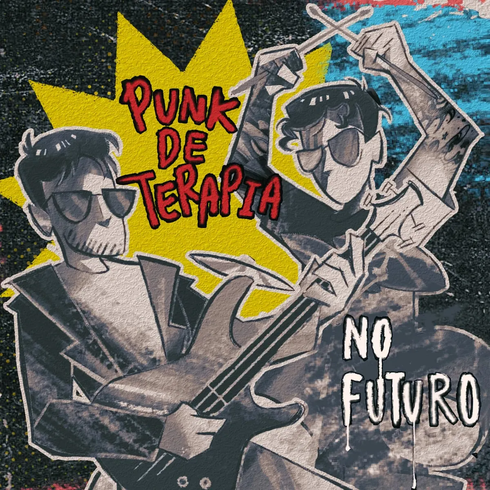
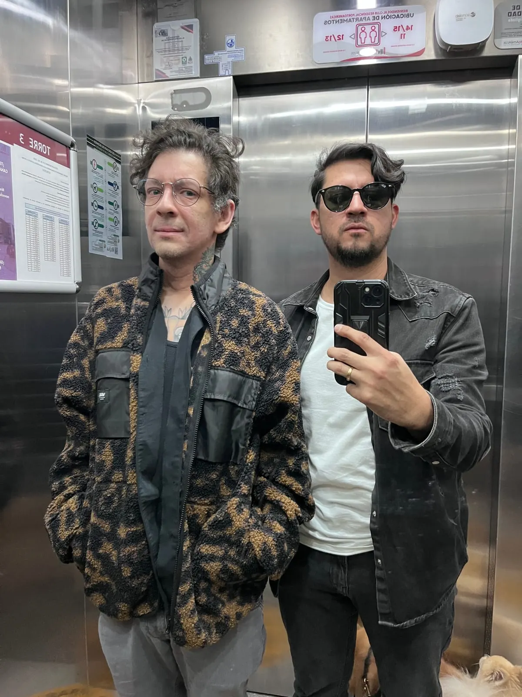
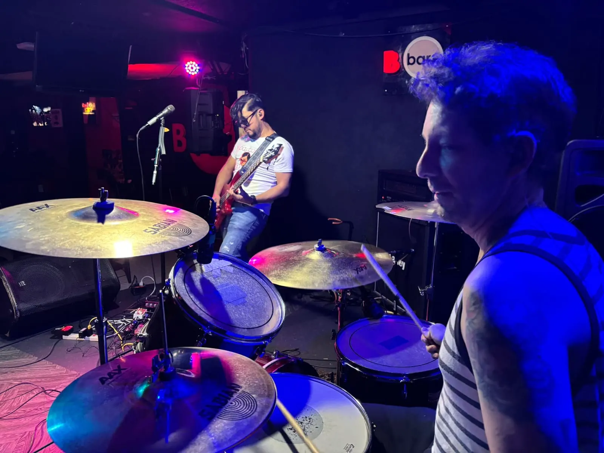
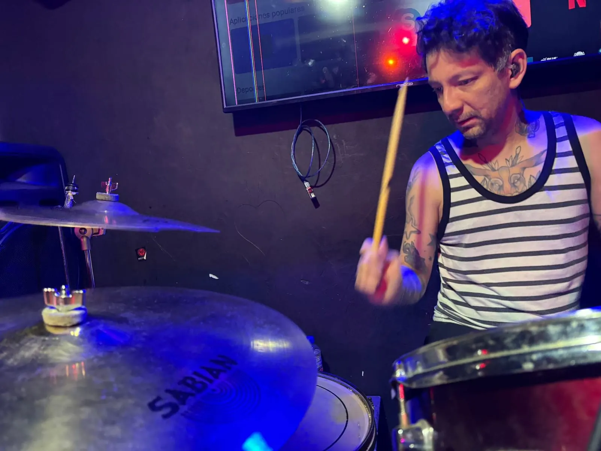
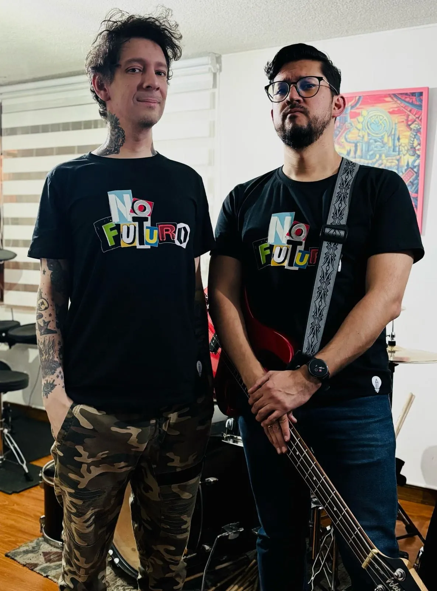
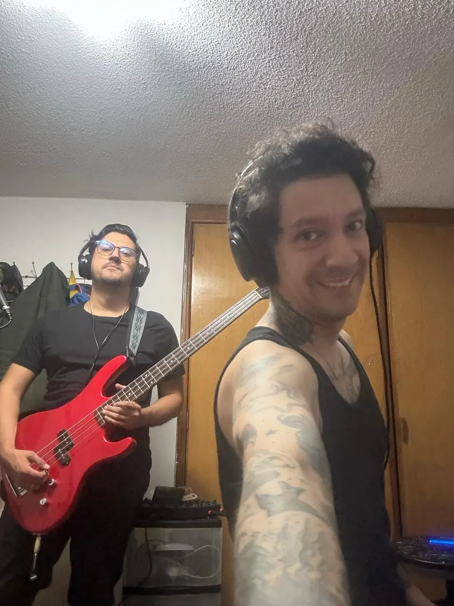

PUNK DE TERAPIA
Punk de terapia es la consolidación de los últimos tres años de música de No Futuro. Una mezcla de nostalgia, vivencias del pasado y sentir en su máxima expresión, es una forma de hacer Punk desde una perspectiva muy personal y emocional. Esto es nuestro balance. Es punk de terapia.
TRACKLIST
PROCESS / CHAOS





PRODUCIDO EN IOESTUDIOS POR NO FUTURO
No futuro son:
Hesner Durán - Voz, bajo
Milo Escorcia - Batería
Baterías grabadas en @baltika_records en la ciudad de Bogotá.
“Detrás de los cristales”: voz principal, bajo y guitarra por Hesner Durán, batería por Milo Escorcia, voces secundarias por Milo Escorcia y Damián Orbegozo.
“Para mí”: voz principal, bajo y guitarra por Hesner Durán, batería por Milo Escorcia, voces secundarias por Milo Escorcia y Damián Orbegozo.
“No aprendí a bailar”: voz principal, bajo y guitarra por Hesner Durán, batería por Milo Escorcia, voces secundarias por Milo Escorcia y Damián Orbegozo.
“Demasiado viejos para cantar rap por eso cantamos punk”: voz principal, bajo y guitarra por Hesner Durán, batería por Milo Escorcia.
“Pánico al pogo”: voz principal, bajo y guitarra por Hesner Durán, batería por Milo Escorcia, voces secundarias por Milo Escorcia y Damián Orbegozo.
“Es lo que hay”: voz principal, bajo y guitarra por Hesner Durán, batería por Milo Escorcia.
“Pésimo servicio”: voz principal, bajo y guitarra por Hesner Durán, batería por Milo Escorcia.
“Tal vez”: voz principal, bajo y guitarra por Hesner Durán, batería por Milo Escorcia.
“Suficiente”: voz principal, bajo y guitarra por Hesner Durán, batería por Milo Escorcia.
Producción artística: Milo Escorcia
Producción musical: Hesner Durán
Fotografía: Caro Gamboa
AGRADECIMIENTOS ESPECIALES
De parte de Hesner: A mi esposa por ser mi compañía, mi estructura de vida y mi pasión. A Helenita por ser la inspiración y la esperanza de un futuro mejor. A Milo por ser parte de la locura de ser músico cuando no lo somos. A Dami por enseñarnos en la música algo más allá de lo que se escucha. A mi familia: a mi mamá Norma, mi papá William, mi hermana Tefy, a mis perros Odín y Andrómeda. A todos mis amigos que van dejando su huella incluso aunque no lo sepan: Luisfer, Ed, Monik, Ana María, Dayan, Eduardo Mantilla y a todas las personas que son parte de mi vida y de las que tengo una pequeña parte en mí.
De parte de Milo: A mi humana principal Caro Gamboa que desde el principio me acompañó y apoya con esta idea, a Hesner Duranx por copiarme cuando le dije que quería tocar bajo y mantenerme motivado a ser mejor MÚSICO porque sí lo somos! A mi mamá, a mis abuelos, a Dami que hizo parte de esta idea, a mis amigos, el Sr Tripa, Ed, Moni y a JD por “dejarnos” juguetes, por último a todas las personas que se han cruzado con este proyecto y de alguna manera u otra han ayudado a que esto siga adelante, una mención especial para Javier y Richard de Bbar, las bandas con las que hemos compartido, a los espacios que nos han abierto sus puertas y gracias a ti por escuchar nuestra música ayer, hoy, mañana y siempre. ¡Y hagan terapia!